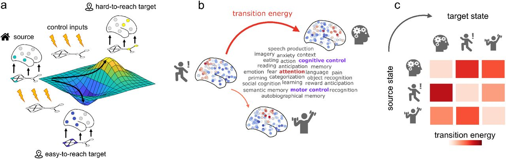
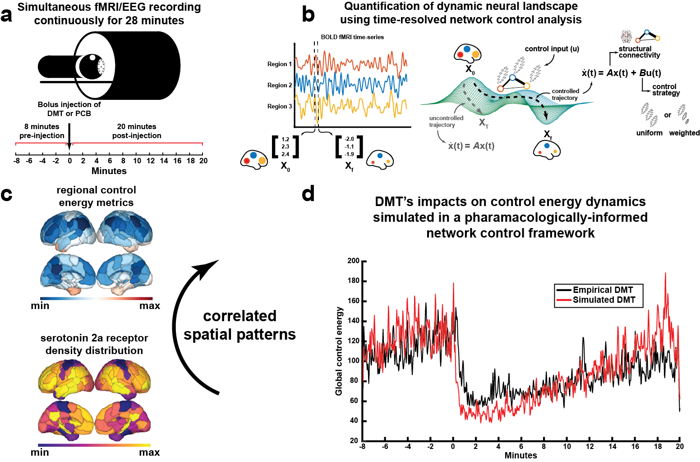
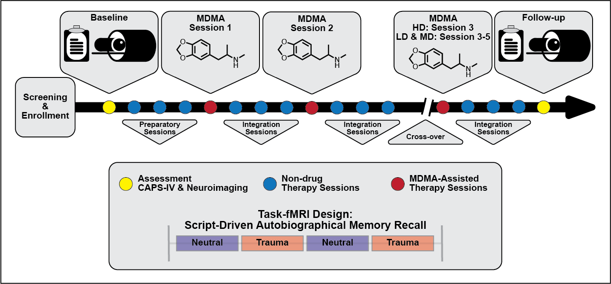
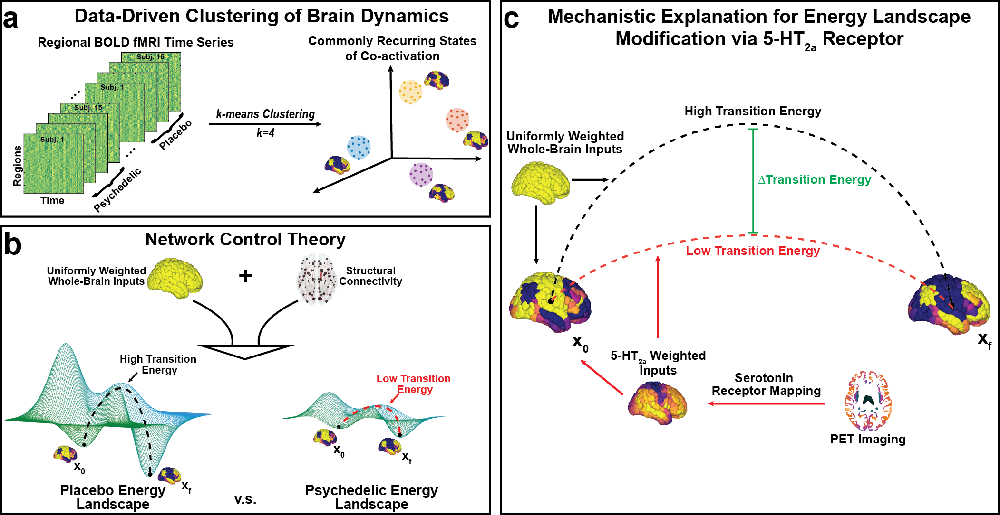

[COMMENTARY] S. P. Singleton, B. L. Sevchik, S. N. Vandekar, E. C. Strain, S. M. Nayak, R. H. Dworkin, J. C. Scott, T. D. Satterthwaite. (2025). "An initiative for living evidence synthesis in clinical psychedelic research”. Nature Mental Health, DOI: [UPDATE ME]. Pre-proofs here.
[6] A. I. Luppi, S. P. Singleton, J. Y. Hansen, K. W. Jamison, D. Bzdok, A. Kuceyeski, R. F. Betzel, B. Misic. (2024). "Contributions of network structure, chemoarchitecture and diagnostic categories to transitions between cognitive topographies”. Nature Biomedical Engineering, DOI: 10.1038/s41551-024-01242-2. Open Access.

Network control with cognitive topographies.(a) Functional brain activity (coloured nodes are active, grey nodes are inactive) evolves through time over a fixed network structure (displayed below the brains). From a given starting configuration of activity (green), some alternative configurations are relatively easy to reach in the space of possible configurations (valley, in blue), whereas others are relatively difficult to achieve (peak, in yellow). To reach a desired target configuration of activity, input energy (represented by the lightning bolt icons) can be injected locally into the system, and this energy will spread to the rest of the system based on its network organisation. (b) We define states as 123 meta-analytic activation maps from the NeuroSynth database. We then use network control theory to quantify the cost of transitioning between these cognitive topographies. (c) Systematic quantification of transition cost between each pair of cognitive topographies results in a look-up table mapping the energy required for each transition.
[COMMENTARY] S. P. Singleton, A. Kuceyeski. (2024). "Bridging Psilocybin-Induced Changes in the Brain’s Dynamic Functional Connectome With an Individual’s Subjective Experience”. Biological Psychiatry: Cognitive Neuroscience and Neuroimaging, DOI: 10.1016/j.bpsc.2024.05.003. Full text here.
[5] S. P. Singleton, P. Velidi, L. Schilling, A. I. Luppi, K. Jamison, L. Parkes, A. Kuceyeski. (2024). "Altered structural connectivity and functional brain dynamics in individuals with heavy alcohol use elucidated via network control theory”. Biological Psychiatry: Cognitive Neuroscience and Neuroimaging, DOI: 10.1016/j.bpsc.2024.05.006. Proofs available here.
[PREPRINT] S. P. Singleton, C. Timmermann, A. I. Luppi, E. Eckernäs, L. Roseman, R. L. Carhart-Harris, A. Kuceyeski. (2023). "Time-resolved network control analysis links reduced control energy under DMT with the serotonin 2a receptor, signal diversity, and subjective experience”. bioRxiv, DOI: 10.1101/2023.05.11.540409. Open Access.

Time-resolved network control analysis of the human brain during a pharmacologically-induced alteration of consciousness.(a) Fourteen individuals were scanned over two days in which they received either DMT and saline placebo in separate visits (two-weeks apart, single-blind, counterbalanced design). On each day, a 28-minute long eyes-closed resting-state EEG-fMRI scan was performed with DMT/placebo intravenously administered at the end of the 8th minute. On the same day, identical scanning sessions were performed where participants were asked to rate the subjective intensity of drug effects at the end of every minute. (b) Here, we deploy a time-resolved network control analysis of the brain's trajectory through its activational landscape. The position in the landscape is illustrated here as a 3D vector containing regional BOLD signal amplitude at a given time t. We compute a control energy time-series from the regional activity vector time series by modeling transitions between adjacent regional activity vectors (x0 and xf, respectively) using a linear time-invariant model within a network control theory framework. In this framework, the state of the network x(t), here a vector of regional BOLD activations at time t, evolves over time via diffusion through the brain’s weighted structural connectome A, the adjacency matrix. In order to complete the desired transition from the initial (x0) to the target state (xf), input (u) is injected into each region in the network. Varying control strategies (reflected in the matrix B) may be deployed wherein different regions are assigned varied amounts of control within the system. Integrating input u(t) at each node over the length of the trajectory from x0 to xf yields region-wise control energy, and summing over all regions yields a global value of control energy required to complete the transition. (c) We find regional control energy and its correlation with EEG signal entropy and subjective experience are associated with the serotonin 2a receptor spatial pattern. (d) Using pharmacological information and only the placebo fMRI, we are able to simulate DMT's impacts on control energy trajectories in the brain.
[4] S. P. Singleton, J. B. Wang, M. Mithoefer, C. Hanlon, M. S. George, A. Mithoefer, O. Mithoefer, A. R Coker, B. Yazar-Klosinski, A. Emerson, R. Doblin, A. Kuceyeski. (2023). "Altered brain activity and functional connectivity after MDMA-assisted therapy for post-traumatic stress disorder”. Frontiers in Psychiatry, DOI: 10.3389/fpsyt.2022.947622. Open Access.

Simplified study design. Subjects were assessed and imaged at the start of the study (baseline). All subjects [low dose (LD; 30 mg MDMA), medium dose (MD; 75 mg MDMA), and high dose (HD; 125 mg MDMA)] underwent three non-drug preparatory therapy sessions prior to their first MDMA dosing session. Each MDMA session was followed by three non-drug integration therapy sessions. After MDMA session 2 and the subsequent integration sessions, subjects were assessed and the dosing blind was broken. HD subjects completed their final set of drug and non-drug therapy sessions unblinded, and LD/MD subjects crossed over into the HD arm where they completed three sets of drug and non-drug sessions, now with the higher dose and unblinded. All subjects were assessed and underwent MRI approximately two months following their last HD MDMA session.
[3] S. P. Singleton, A. I. Luppi, R. L. Carhart-Harris, J. Cruzat, L. Roseman, D.J. Nutt, G. Deco, M. L. Kringelbach, E. A. Stamatakis, A. Kuceyeski. (2022). "Receptor-informed network control theory links LSD and psilocybin to a flattening of the brain’s control energy landscape”. Nature Communications, DOI: 10.1038/s41467-022-33578-1. Open Access.

Mapping the energy landscape of the human brain with network control theory.a We concatenated all fMRI time series together (all subjects, all conditions) and employed the k-means clustering algorithm to identify common activation patterns, or states. b Using network control theory and a representative structural connectome, we calculated the minimum energy required to transition between states (or maintain the same state) using each individual’s brain states derived from the psychedelic and placebo conditions separately. Our calculations reveal an energy landscape that is flattened by LSD and psilocybin. c Weighting the energy calculations of the placebo brain states with inputs from PET-derived receptor density maps of the serotonin 2a receptor also resulted in a flattened energy landscape, providing a mechanistic explanation for these drug’s flattening effects.
[2] M. Nadgorny, D. T. Gentekos, Z. Xiao, S. P. Singleton, B. P. Fors, L. A. Connal. (2017). "Manipulation of Molecular Weight Distribution Shape as a New Strategy to Control Processing Parameters”. Macromolecular Rapid Communications, DOI: 10.1002/marc.201700352. Full text here.
[1] M. S. Ganewatta, K. P. Miller, S. P. Singleton, P. Mehrpouya-Bahrami, Y. P. Chen, Y. Yan, M. Nagarkatti, P. Nagarkatti, A. W. Decho, C. Tang. (2015). "Antibacterial and Biofilm-Disrupting Coatings from Resin Acid-Derived Materials”. Biomacromolecules, DOI: 10.1021/acs.biomac.5b01005. Full text here.